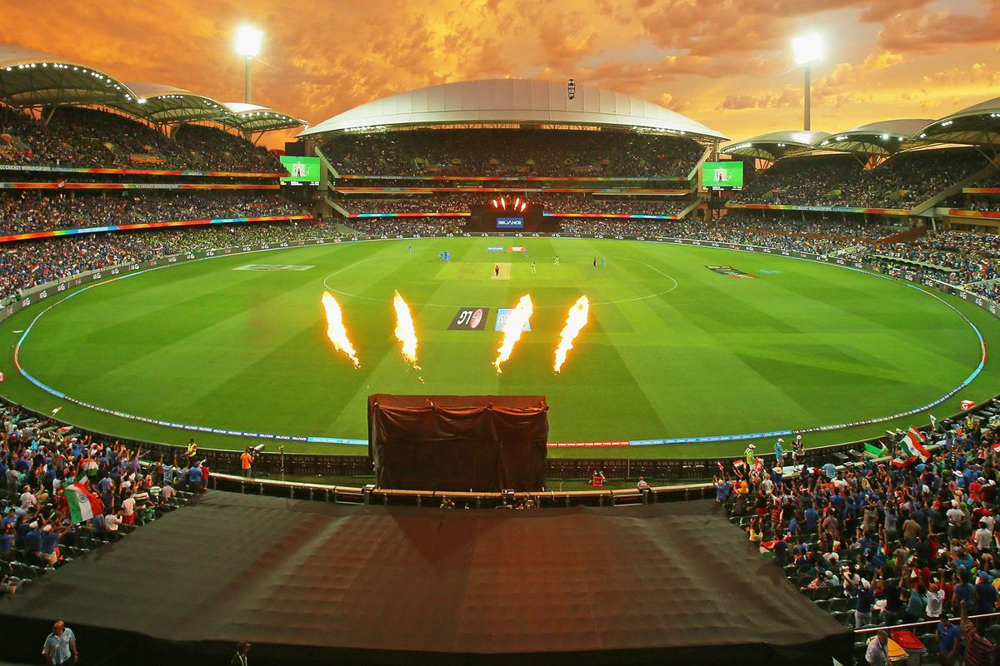
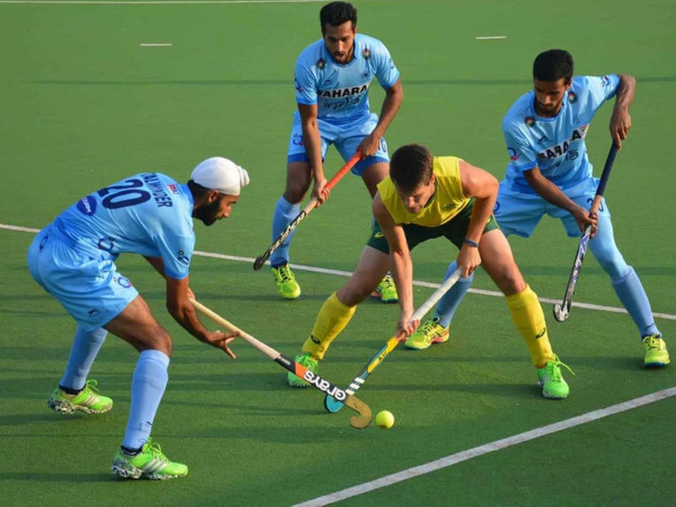
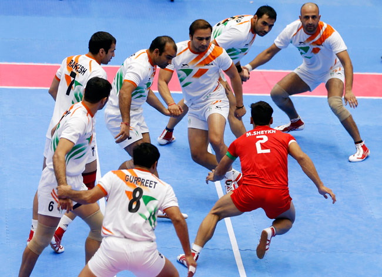

CRICKET
Cricket is a bat-and-ball game played between two teams of eleven players each on a cricket field, at the centre of which is a rectangular 22-yard-long pitch with a target called the wicket (a set of three wooden stumps topped by two bails) at each end. Each phase of play is called an innings during which one team bats, attempting to score as many runs as possible, whilst their opponents field. Depending on the type of match, the teams have one or two innings apiece and, when the first innings ends, the teams swap roles for the next innings. Except in matches which result in a draw, the winning team is the one that scores the most runs, including any extras gained.

HOCKEY
Field hockey is a team sport of the hockey family. The earliest origins of the game date back to the Middle Ages in England, Scotland, France and the Netherlands.[1] The game can be played on a grass field or a turf field as well as an indoor board surface. Each team plays with eleven players, including the goalie. Players use sticks made out of wood, carbon fibre, fibre glass or a combination of carbon fibre and fibre glass in different quantities (with the higher carbon fibre stick being more expensive and less likely to break) to hit a round, hard, plastic ball.

KABADDI
Kabaddi is a contact team sport that originated in Tamilnadu. It is the national sport of Bangladesh. It is also popular in South Asia and is the state game of the Indian states of kerala, Andhra Pradesh, Bihar, Haryana, Karnataka, Maharashtra, Punjab, Tamil Nadu and Telangana.
Two teams compete, each occupying its own half of the court. They take turns sending a "raider" into the opposing team's half and earn points if the raider manages to touch opposing team members and return to the home half, all while chanting word "kabaddi". However, if the raider is tackled and prevented from returning, the opposing team gets the point